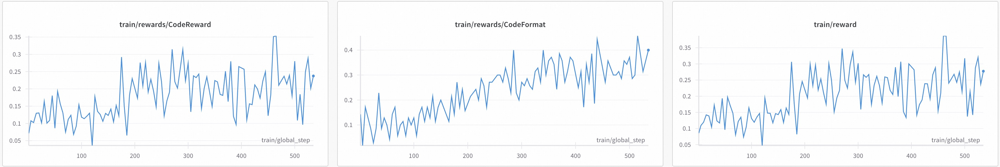

Code Training with GRPO
This document explains how to use GRPO to train models for code tasks.
Model: Qwen/Qwen2.5-7B-Instruct
Dataset: open-r1/verifiable-coding-problems-python-10k
dataset example
{
"problem": "Solve the following coding problem using the programming language python: Polycarp has $n$ different binary words. A word called binary if it contains only characters '0' and '1'. For example, these words are binary: \"0001\", \"11\", \"0\" and \"0011100\". Polycarp wants to offer his set of $n$ binary words to play a game \"words\". In this game, players name words and each next word (starting from the second) must start with the last character of the previous word. The first word can be any. For example, these sequence of words can be named during the game: \"0101\", \"1\", \"10\", \"00\", \"00001\". Word reversal is the operation of reversing the order of the characters. For example, the word \"0111\" after the reversal becomes \"1110\", the word \"11010\" after the reversal becomes \"01011\". Probably, Polycarp has such a set of words that there is no way to put them in the order correspondent to the game rules. In this situation, he wants to reverse some words from his set so that: the final set of $n$ words still contains different words (i.e. all words are unique); there is a way to put all words of the final set of words in the order so that the final sequence of $n$ words is consistent with the game rules. Polycarp wants to reverse minimal number of words. Please, help him. -----Input----- The first line of the input contains one integer $t$ ($1 \\le t \\le 10^4$) — the number of test cases in the input. Then $t$ test cases follow. The first line of a test case contains one integer $n$ ($1 \\le n \\le 2\\cdot10^5$) — the number of words in the Polycarp's set. Next $n$ lines contain these words. All of $n$ words aren't empty and contains only characters '0' and '1'. The sum of word lengths doesn't exceed $4\\cdot10^6$. All words are different. Guaranteed, that the sum of $n$ for all test cases in the input doesn't exceed $2\\cdot10^5$. Also, guaranteed that the sum of word lengths for all test cases in the input doesn't exceed $4\\cdot10^6$. -----Output----- Print answer for all of $t$ test cases in the order they appear. If there is no answer for the test case, print -1. Otherwise, the first line of the output should contain $k$ ($0 \\le k \\le n$) — the minimal number of words in the set which should be reversed. The second line of the output should contain $k$ distinct integers — the indexes of the words in the set which should be reversed. Words are numerated from $1$ to $n$ in the order they appear. If $k=0$ you can skip this line (or you can print an empty line). If there are many answers you can print any of them. -----Example----- Input 4 4 0001 1000 0011 0111 3 010 101 0 2 00000 00001 4 01 001 0001 00001 Output 1 3 -1 0 2 1 2 The input will be stdin and you should print your solution to stdout Now solve the problem and return the code.",
"verification_info": {
"language": "python",
"test_cases": [
{
"input": "4\n4\n0001\n1000\n0011\n0111\n3\n010\n101\n0\n2\n00000\n00001\n4\n01\n001\n0001\n00001\n",
"output": "1\n3 \n-1\n0\n\n2\n1 2 \n",
"type": "stdin_stdout"
}
]
}
}
verification_info provides the programming language as well as test cases, which include input and expected output.
Reward Functions
The training process utilizes two reward functions: code_reward and code_format. For implementation details, refer to the code.
code_rewardExecutes the generated code using e2b or judge0. Validates the code against the test cases in the dataset and assigns a reward value based on correctness.code_formatRequires the model to produce formatted responses that include code blocks.
Note: Currently, executing code through E2B only supports the Python language. If you need to execute code in other languages, you can use Judge0(judge0 supported languages).
Training Script
Register on e2b to obtain your E2B_API_KEY and set it as an environment variable.
Add
external_code_rewardas a reward function with--reward_funcs.Set
--external_pluginsto the path of plugin.py.
launch external vLLM server using following script
CUDA_VISIBLE_DEVICES=7 \
swift rollout \
--model Qwen/Qwen2.5-7B-Instruct \
--vllm_enable_lora true \
--vllm_max_lora_rank 16
E2B_API_KEY=xxx \
WANDB_API_KEY=xxx \
CUDA_VISIBLE_DEVICES=0,1,2,3,4,5,6 \
NPROC_PER_NODE=7 \
swift rlhf \
--rlhf_type grpo \
--model Qwen/Qwen2.5-7B-Instruct \
--external_plugins examples/train/grpo/plugin/plugin.py \
--reward_funcs external_code_reward external_code_format \
--reward_weights 1.0 0.1 \
--vllm_mode server \
--use_vllm true \
--vllm_server_host 127.0.0.1 \
--vllm_server_port 8000 \
--tuner_type lora \
--lora_rank 16 \
--lora_alpha 32 \
--torch_dtype bfloat16 \
--dataset 'open-r1/verifiable-coding-problems-python-10k' \
--load_from_cache_file true \
--max_completion_length 2048 \
--num_train_epochs 1 \
--per_device_train_batch_size 2 \
--per_device_eval_batch_size 2 \
--learning_rate 1e-6 \
--gradient_accumulation_steps 1 \
--eval_steps 200 \
--save_steps 200 \
--save_total_limit 2 \
--logging_steps 5 \
--max_length 4096 \
--output_dir output \
--warmup_ratio 0.05 \
--dataloader_num_workers 4 \
--dataset_num_proc 4 \
--num_generations 14 \
--temperature 0.9 \
--system 'examples/train/grpo/prompt.txt' \
--deepspeed zero2 \
--log_completions true \
--report_to wandb
judge0
Set environment variables:
(Required) JUDGE0_ENDPOINT: The endpoint address for accessing Judge0.
(Optional) JUDGE0_X_AUTH_TOKEN: The access token for Judge0.
Add
external_code_reward_by_judge0as a reward function with--reward_funcs.Set
--external_pluginsto the path ofplugin.py.
JUDGE0_ENDPOINT=xxx \
JUDGE0_X_AUTH_TOKEN=xxx \
WANDB_API_KEY=xxx \
CUDA_VISIBLE_DEVICES=0,1,2,3,4,5,6 \
NPROC_PER_NODE=7 \
swift rlhf \
--rlhf_type grpo \
--model Qwen/Qwen2.5-7B-Instruct \
--external_plugins examples/train/grpo/plugin/plugin.py \
--reward_funcs external_code_reward_by_judge0 external_code_format \
--reward_weights 1.0 0.1 \
--vllm_mode server \
--use_vllm true \
--vllm_server_host 127.0.0.1 \
--vllm_server_port 8000 \
--tuner_type lora \
--torch_dtype bfloat16 \
--dataset 'open-r1/verifiable-coding-problems-python-10k' \
--load_from_cache_file true \
--max_completion_length 2048 \
--num_train_epochs 1 \
--per_device_train_batch_size 2 \
--per_device_eval_batch_size 2 \
--learning_rate 1e-6 \
--gradient_accumulation_steps 1 \
--eval_steps 200 \
--save_steps 200 \
--save_total_limit 2 \
--logging_steps 5 \
--max_length 4096 \
--output_dir output \
--warmup_ratio 0.05 \
--dataloader_num_workers 4 \
--dataset_num_proc 4 \
--num_generations 14 \
--temperature 0.9 \
--system 'examples/train/grpo/prompt.txt' \
--deepspeed zero2 \
--log_completions true \
--report_to wandb
Training Reward Curve
